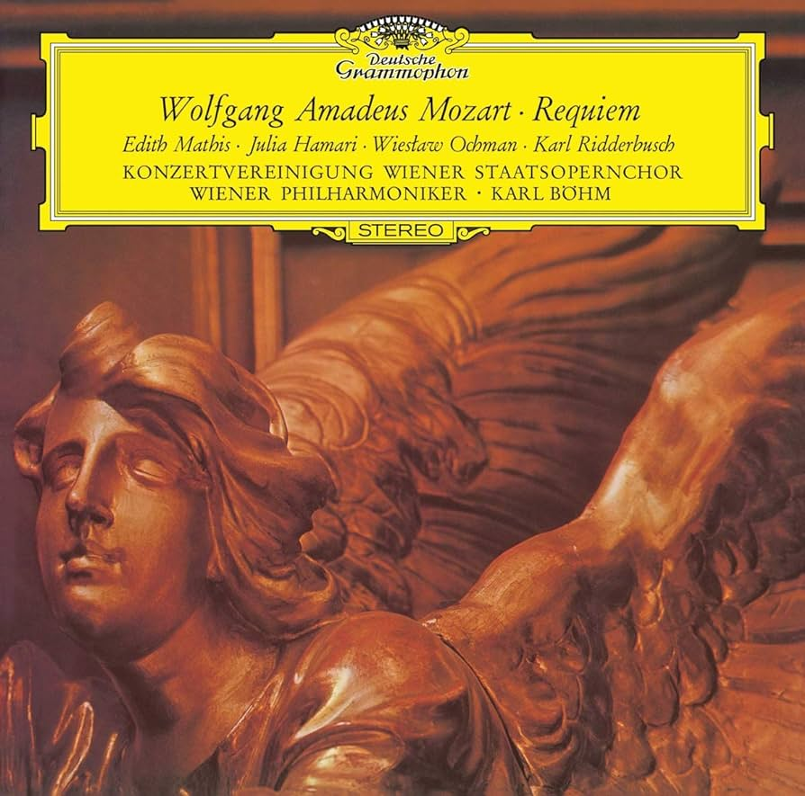
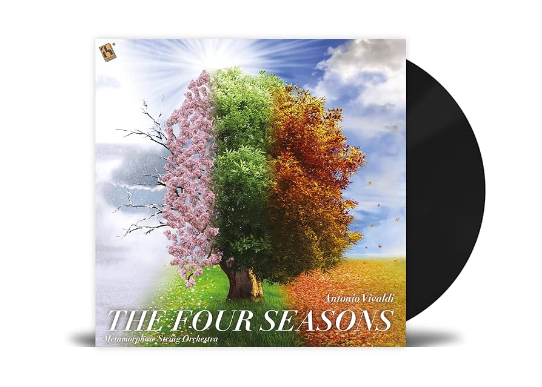
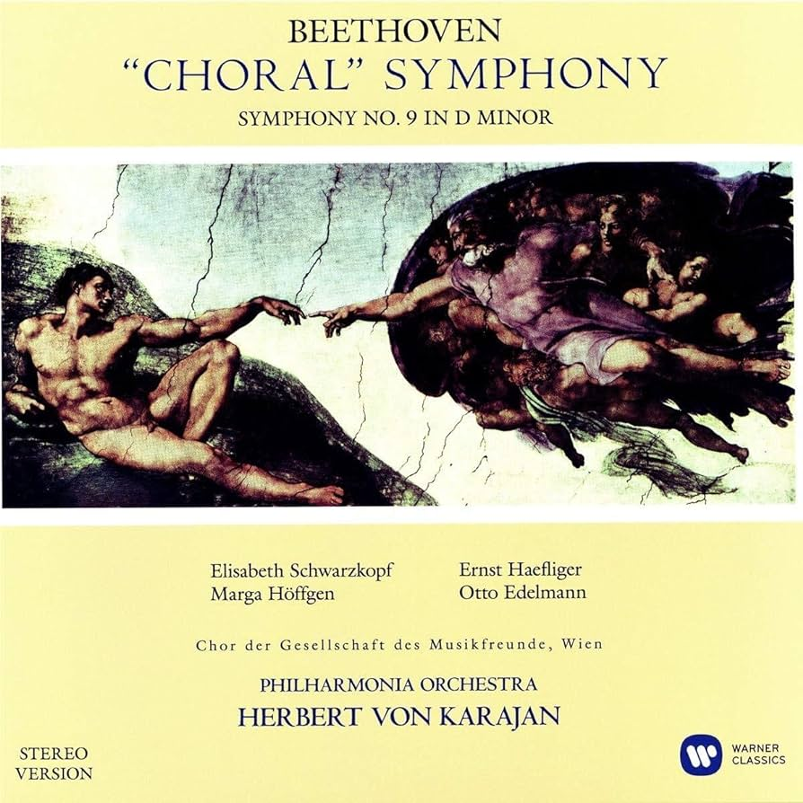
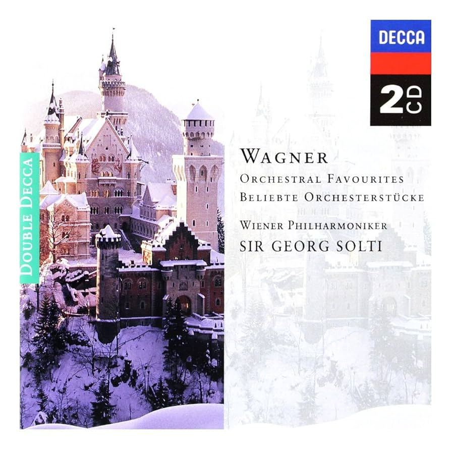
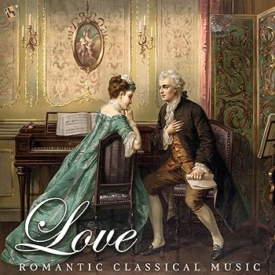

Vinilo del Réquiem en D menor, K. 626, es una misa de Réquiem de Wolfgang Amadeus Mozart el cual compuso parte de su propio Réquiem en Viena a finales de 1791, pero quedó inconcluso a su muerte el 5 de diciembre del mismo año.
31.99€
Añadir al carrito

La obra más conocida del compositor del Barroco musical del siglo XVII.Las Cuatro Estaciones de Vivaldi son en realidad cuadros musicales que narran el ciclo y la alternancia de las estaciones, cada una con sus propias características.
21.99€
Añadir al carrito

La obra más conocida del compositor alemán. Es un poema anterior a la Revolución Francesa que tiene un mensaje muy concreto de referencia a la alegría, como un trazo de unión entre los hombres, y a la fraternidad, Una apologia a algunos de los temas que impulsaron la Revolución Francesa: libertad, igualdad y fraternidad”.
41.03€
Añadir al carrito
Recopilación de las obras del compositor alemán más influyente del Barroco. En este recopilatorio de obras se destaca su profundidad intelectual, su perfección técnica y su belleza artística, además de la síntesis de los diversos estilos nacionales de su época y del pasado.
26.99€
Añadir al carrito

Richard Wagner fue un compositor, director de orquesta, poeta, ensayista, dramaturgo y teórico musical alemán del Romanticismo, en este vinilo vemos algunas de sus mejores obras
17.44€
Añadir al carrito

recopilatorio de distintos autores del Clasicismo y el Romanticismo musical, en el se encuentran autores como Puccini, Schubert, Chopin, Debussy y Tchaikosvky.
29,99€
Añadir al carrito